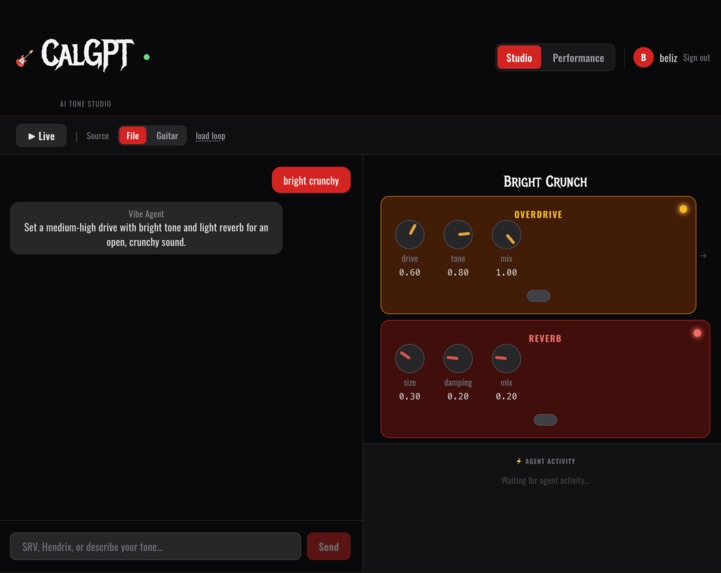
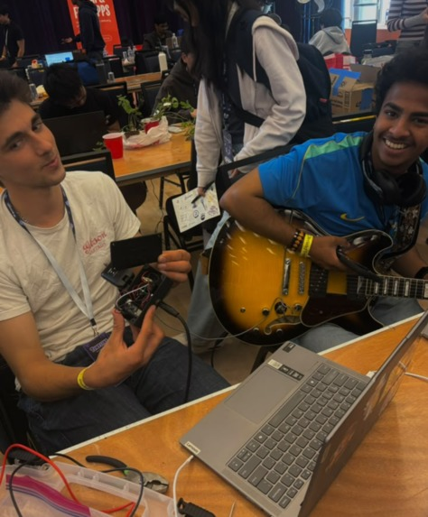
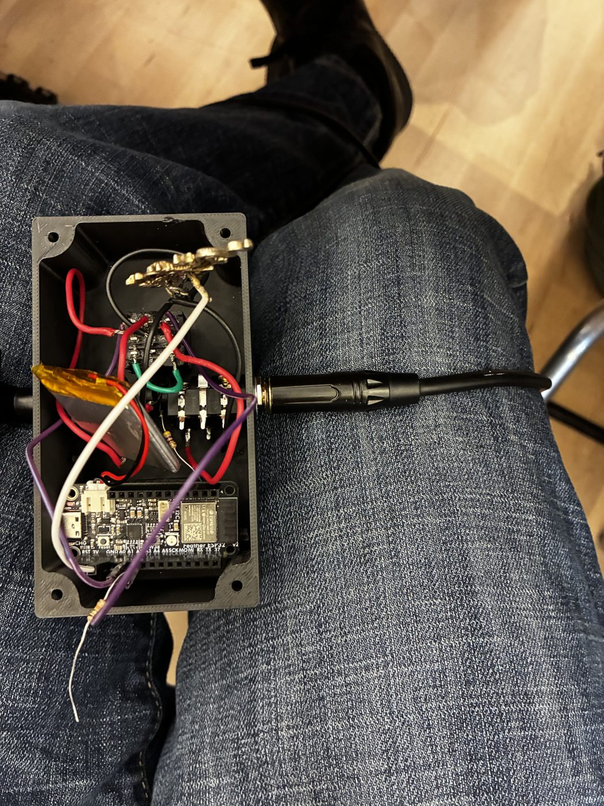
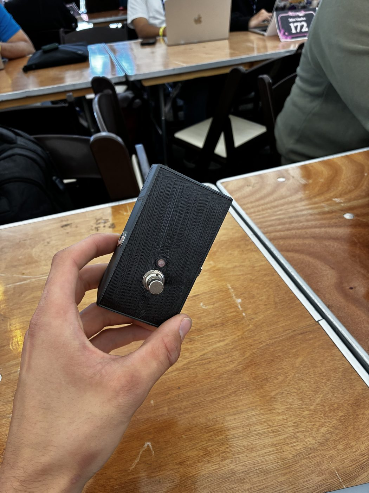
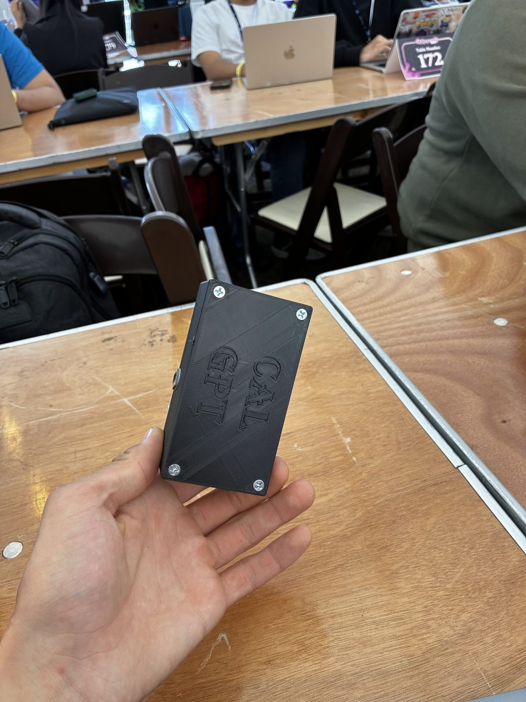

CalGPT
2026
- Built an AI guitar pedal that turns a plain-English description into a playable effect chain.
- Engineered a five-agent AI system that generates and self-corrects effect chains live.
- Bridged AI to hardware, pushing generated parameters to an ESP32 DSP pedal over WiFi.
Collaborators
Links / info


Inspiration
Every guitarist knows the feeling of hearing a tone in their head - "warm 70s blues with a bit of slapback" - and spending twenty minutes hunched over a pedalboard trying to dial it in. We wanted to fix that.
The bigger vision is the studio: imagine a producer in a recording session saying "give me something like early Clapton, but darker" and having the effects update automatically on every amp in the room. No interruption. No gear knowledge required. Just describe it and play.
For guitarists, that starts with being able to say "SRV" or "psychedelic Hendrix with heavy reverb" and having AI understand exactly what gear, what parameters, what feel - and build it for you.
What it does
CalGPT turns a plain-English description of a guitar tone into a complete, ready-to-play effect chain - overdrive, chorus, delay, reverb - with every parameter set.
Five AI agents coordinate in real time on Band:
- research_agent - receives the user's message first. If you name an artist, it describes their known gear and signature sound. If you give a vibe, it translates it into gear language ("warm bluesy = mid-gain OD, light reverb, slapback delay"). It then hands off to vibe_agent with that context.
- vibe_agent - the core engineer. Takes the research context and generates the full JSON effect chain. Sends it to both critic_agent and memory_agent simultaneously.
- critic_agent - reviews the chain for technical issues: high drive with heavy reverb clashes, delay feedback above 0.85 risks runaway. If it finds a problem, it bounces the chain back to vibe_agent with a specific fix. If the chain is solid, it tells memory_agent to log it.
- memory_agent - extracts 3-5 tone keywords from every approved chain and builds a running session profile ("warm, vintage, Texas blues, mid-gain"). Sends that profile back to vibe_agent so every new chain reflects what you've been reaching for.
- feedback_agent - when you hit thumbs-down, it diagnoses the specific parameter causing the problem and proposes three quick fixes ("Less reverb", "Softer drive", "Add warmth"), then routes the rejection back to vibe_agent to revise.
The agents don't follow a hardcoded pipeline - they communicate through Band's @mention routing. critic_agent can loop vibe_agent back for a revision, and memory_agent can inform future chains. Each agent only activates when @mentioned, which is what makes the coordination feel like a real studio conversation.
Studio mode: Type a tone or an artist name, and watch it render as interactive stomp-box knobs in real time. Performance mode: Build a setlist, precompute every song's tone, and flip through them with a single tap mid-set.
Real pedal output: Every tone is pushed straight to the hardware. Our ESP32 firmware receives the settings over WiFi and runs the effect DSP on-device - the same numbers that move the on-screen knobs move the real thing.
How we built it
The idea that made everything click is a parameter contract: the AI never sends code to the pedal - it sends numbers. Claude (via the Anthropic API) takes a tone description and returns strict JSON - an ordered chain of effects, each with normalized parameters. That same contract drives two interchangeable engines: a software engine (Spotify's pedalboard in Python) for instant preview, and our ESP32 firmware for the real pedal. So we could build and demo the whole thing in software, then bolt on hardware without rewriting the brain.
- Frontend: React + Tailwind (Vite) - a Studio chat that renders the chain as knobs, plus a Performance view with the setlist and Start / Prev / Next.
- Backend: FastAPI (Python). One agent call turns a vibe into a validated effect chain, and every value is clamped server-side so a hallucinated parameter can never reach the audio engine.
- Audio engine:
pedalboardmaps our normalized params to studio-quality effects. - Hardware: ESP32 firmware (C++) with a single DSP function that applies the whole chain to a 32-bit signal sample-by-sample, plus a WiFi endpoint that receives the flat parameter set.
Each effect is its own small equation, composed in signal order: overdrive is a soft-clip waveshaper, vibrato/chorus is a delay line modulated by an LFO, and delay is a feedback line.
To run a whole set without depending on flaky venue WiFi, we export the setlist's tones to a CSV and load it onto the pedal's flash (LittleFS) - so the pedal switches tones locally off a footswitch, no network needed mid-song. We built fast and in parallel as a team of four, using Claude Code to move quickly while keeping every change additive so our work never collided.
Challenges we ran into
The hardware-software connection didn't make it in time. The architecture is solid - the firmware receives parameters correctly, and the software generates them correctly - but getting the two reliably talking over campus WiFi during the hackathon ran out of clock. Client isolation on the venue network meant our laptop often couldn't reach the pedal directly. The fallback (CSV flash load) works, but the live wireless push that would have closed the loop didn't get a stable demo window. The bridge code exists; we just needed more time.
Accomplishments that we're proud of
We got the full pipeline working end to end: describe a tone in plain English, watch it render as knobs, and see the exact parameters land on a real pedal over WiFi. Performance mode flips a live pedal through an entire setlist with one tap. And the swappable-backend architecture means the same agent output drives software or hardware - the thing that let four people build a hardware product in a single weekend without it falling apart.
What we learned
We learned how to decouple an AI "brain" from a real-time system with a clean contract, and how much that buys you: testability, parallel teamwork, and a hardware path that never blocks the software demo. We picked up real DSP (waveshaping, modulated delay, comb/allpass reverb), the tradeoffs between offline and real-time audio, and a team git workflow built on small additive changes. Mostly we learned that the hard part of an AI hardware project isn't the AI or the hardware - it's the interface between them.
What's next for CalGPT
- Live guitar through the ESP32 with an I2S codec - the full real-time pedal experience.
- Hands-free setlist switching triggered by a tap pattern on the strings.
- Voice input - describe tones out loud while you play.
- The studio vision at scale: a session where the engineer says what they want and every amp in the room updates automatically.


